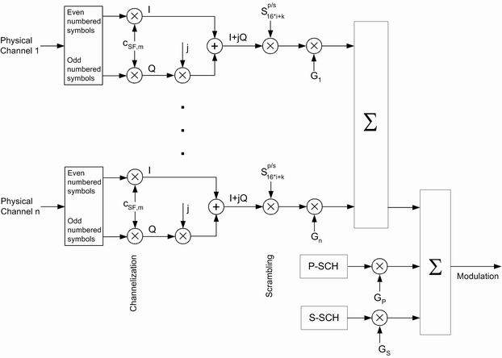

3GPP specifies different physical channel types. The channels are generated by mapping transport channel information into a physical channel and differ in their physical parameters.
Common channels carry messages that are not directed at a particular UE; they are point-to-multipoint channels. Dedicated channels carry information related to a particular connection; they are point-to-point channels. Shared channels are dedicated channels shared by several UEs. At a given time, a shared channel is assigned to one UE only, but the assignment can change within a few timeslots.
An overview of the physical channels of the generated downlink signal is given in the following table. The third column lists some channel properties. If not mentioned otherwise, both primary and secondary scrambling code are allowed and the channelization code can be set. The spreading factor (SF) and the symbol rate are indicated.
Channel type | Purpose | Properties |
|---|---|---|
Primary common pilot channel (P-CPICH) | Determination of the scrambling code out of a scrambling code group Phase reference for SCH and other downlink physical channels | SF = 256, 15 ksps Fixed channelization code c256, 0 Primary scrambling code Predefined symbol sequence |
Secondary common pilot channel (S-CPICH) | Alternative phase reference for the cell; also used as a phase reference for some conformance tests | SF = 256, 15 ksps Predefined symbol sequence Zero or one S-CPICH channel per cell |
Primary synchronization channel (P-SCH) | Slot synchronization between the instrument and the UE | Fixed 256-chip code (primary synchronization code) Time-multiplexed with P-CCPCH, 256 chips per slot No channelization, no scrambling |
Secondary synchronization channel (S-SCH) | Frame synchronization between the instrument and the UE Provides the scrambling code group | 256-chip code depending on the slot number and the scrambling code group Time-multiplexed with P-CCPCH, 256 chips per slot No channelization, no scrambling |
Primary common control physical channel (P-CCPCH) | Transmits the system frame number (SFN) and is used as a timing reference for all physical channels Carries the BCH transport channel | SF = 256, 15 ksps Fixed channelization code c256, 1 Primary scrambling code Time-multiplexed with SCH, 2304 chips per slot |
Secondary common control physical channel (S-CCPCH) | Carries the forward access channel (FACH) and the paging channel (PCH) | SF = 64, 60 ksps Primary scrambling code |
Paging indicator channel (PICH) | Transfer of paging indicators to the UE | SF = 256, 15 ksps Primary scrambling code First 288 bits of radio frame carry paging indicators, remaining 12 bits no transmission (DTX). |
Acquisition indicator channel (AICH) | Transfer of acquisition indicators to the UE | SF = 256, 15 ksps Primary scrambling code Repeated sequence of 15 access slots with 5120 chips each. First 4096 chips of access slot carry acquisition indicators, remaining 1024 chips no transmission (DTX). |
Dedicated physical channel (DPCH) | Transfer of control information via dedicated physical control channel (DPCCH) and user data via dedicated physical data channel (DPDCH) to the UE. The DPCCH carries pilot bits, transmit power control (TPC) bits and transport format combination indicators (TFCI). | Variable spreading factor depending on connection configuration (e.g. connection type and data rate). DPCCH and DPDCH time-multiplexed |
Fractional dedicated physical channel (F-DPCH) | Is a special case of downlink DPCCH, carries control information for the UL DPCCH associated with the F-DPCH. Transfer of up to 10 TPC streams for 10 different HSDPA users. | SF = 256, 15 ksps |
High-speed shared control channel (HS-SCCH) | Transfer of downlink signaling information necessary for decoding the HS-PDSCH. Carries a UE ID identifying the target UE of the information. One HS-SCCH set with up to 4 HS-SCCHs can be allocated to one UE. UE monitors allocated HS-SCCHs. When receiving corresponding control information, it starts receiving the indicated HS-PDSCHs. | SF = 128, 30 ksps |
High-speed physical downlink shared channel (HS-PDSCH) | Carries the high-speed downlink shared channel (HS-DSCH) | SF = 16, 240 ksps (several codes can be assigned to the same UE) |
Enhanced DCH absolute grant channel (E-AGCH) | Transfer of uplink E-DCH absolute grants to the UE | SF = 256, 15 ksps |
Enhanced DCH relative grant channel (E-RGCH) | Transfer of uplink E-DCH relative grants to the UE | SF = 128, 30 ksps Same channelization code as E-HICH |
Enhanced DCH HARQ indicator channel (E-HICH) | Transfer of uplink E-DCH HARQ acknowledgement indicators to the UE | SF = 128, 30 ksps Same channelization code as E-RGCH |
The R&S CMW uses the scheme defined in 3GPP TS 25.213 to spread and combine the downlink channels (see figure below). For all physical channels except P-SCH and S-SCH, the real-valued symbols are mapped to an I and Q branch. The I and Q branches of each channel are spread to the chip rate using the same channelization code cSF,m for both branches.
The complex-valued chip sequences are scrambled with primary or secondary scrambling codes Sp or Ss, weighted with individual factors G and then combined using complex addition. The G factors are directly related to the individual channel levels set at the instrument. See also "Scrambling Codes".
The complex-valued synchronization channels P-SCH and S-SCH are not spread but weighted separately and then added to the already combined signal.
